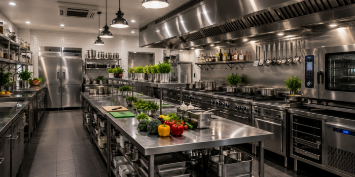

01 / CONSULTING
주방 컨설팅·설계
급식 규모와 작업 흐름, 공간 여건을 고려한 주방 동선·설비 배치·기초 계획 및 설계 지원.
건강한 조리 기술을 연구하고, 더 나은 주방 환경을 설계합니다. 단체급식·상업용 주방설비의 컨설팅부터 설계, 설치·시공, 사후관리까지.

KFOODTECH 한빛산업은 1995년 창업 이래 식품·주방설비 현장에서 축적한 경험을 바탕으로 연구개발과 실무 엔지니어링을 연결합니다.
2010년부터 2012년까지 농림축산식품부 「쌀가루 가정·외식용 조리법 및 조리기자재 개발」 연구개발사업에 주관연구기관으로 참여해 조리법과 조리기자재를 연구했습니다.
기술·연구개발 협력 문의 ↗RESEARCH INTO PRACTICE
급식 규모와 작업 흐름, 공간 여건을 고려한 주방 동선·설비 배치·기초 계획 및 설계 지원.
단체급식 및 상업시설의 조리·냉장·제과·편의점 설비 공급과 현장 조건에 맞는 구성.
주방 환기 및 공조 덕트 시스템, 설비 설치·시공, 현장 관리와 후속 유지관리까지.
시설의 운영 목적과 규모를 확인하고 주방 동선, 설비 배치, 조리·냉장 장비, 환기와 공조 계획을 함께 검토합니다. 상담부터 설계 지원, 설치·시공, 사후관리까지 현장 조건에 맞춰 연결합니다.
목표와 운영 환경 파악
동선과 설비 구성 검토
설치 및 현장 관리
운영 지원과 점검
고객의 의견을 현장에서 듣고, 고장 대응을 넘어 예방 점검(B/S)과 사후관리(A/S)를 중시합니다.
시설 유형, 규모, 설치 지역과 희망 일정을 정리해 상담해 주세요. 설계도면과 시방서 등 관련 자료가 있다면 이메일에 첨부해 주시면 됩니다.